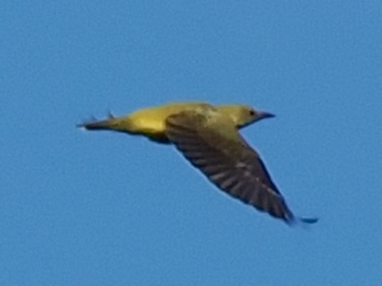

Eurasian Golden Oriole
Oriolus oriolus
Order: Passeriformes
Family: Oriolidae

A medium-sized yellow bird. This is a female or juvenile, which is more greenish and has slightly darker wings. Male has entirely black wings and is brighter yellow. Gives fluty calls and some corvid-like noises. Found high up in the canopy.